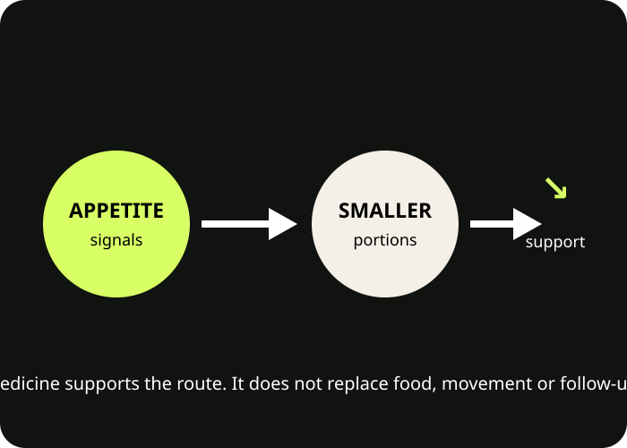
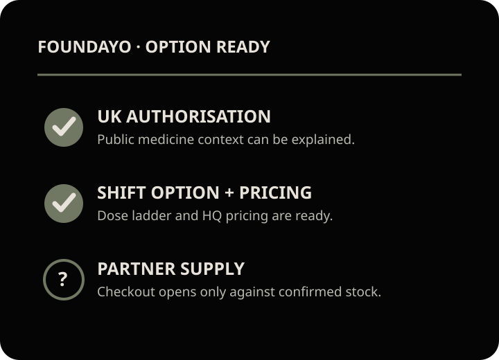
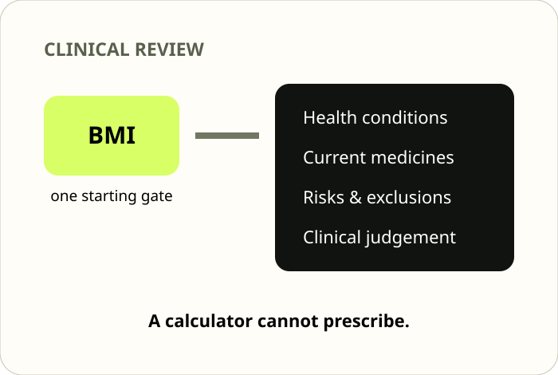

01 · UNDERSTAND IT


CURRENT SUPPLY
Checking live supply status…
No card is charged here. Suitability and dose must be confirmed by the prescribing service.
01 · UNDERSTAND IT

02 · THE DOSE ROUTE
This is an overview, not a dosing instruction. Never change dose without the prescribing clinician.
03 · ELIGIBILITY
Many weight-management medicines are considered from BMI 30, or from a lower BMI where qualifying weight-related conditions apply. Thresholds can differ by medicine and individual circumstances.
Check my BMI
04 · THE BITS SALES PAGES HIDE
Urgent or severe symptoms need medical help, not a website. Read the patient leaflet and follow the clinician’s advice.
05 · FROM CHOICE TO SUPPORT
Medicine information changes. The current patient leaflet and product information take precedence.
Open official UK product information